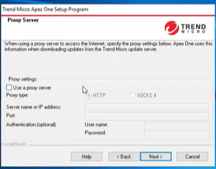

Apex one Tutorial Installation
1) Vai aparecer varias telas e vc clica em next
Vai aparecer a parte de scanear o seu PC antes de vc avançar com a instalação e é viavel que vc clique em sim pra isso e depois clique em next
3)Use um proxy se sua empresa tiver um

4) Specify the activation code

5) Especifica onde vai instalar
6) Identificação server

7) Identifcar o Web server (por default or virtual website- onde vc define) 
8) Se atente ao requirements

9) Database setup

10) Next
11) Integração Smart Protection Server

11) Next
12)

13)

14)

15) Mais especificos para web

16) server authentication to apex one Talk to the server

17) O password do unload and unistall deve ser o mesmo do root

18)

19) Install